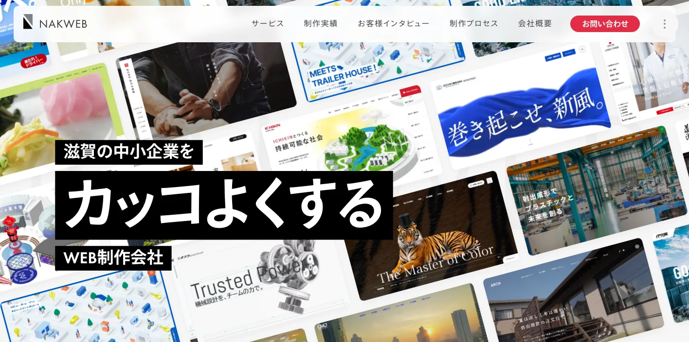
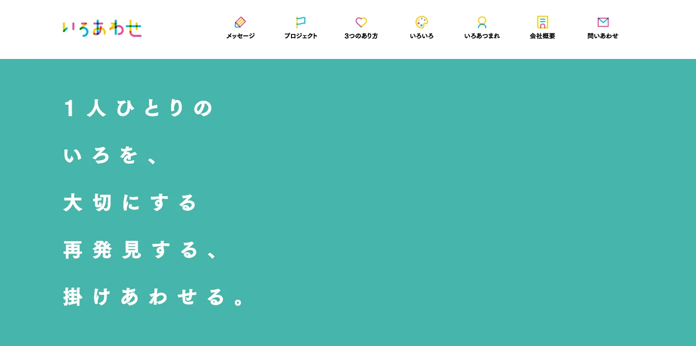
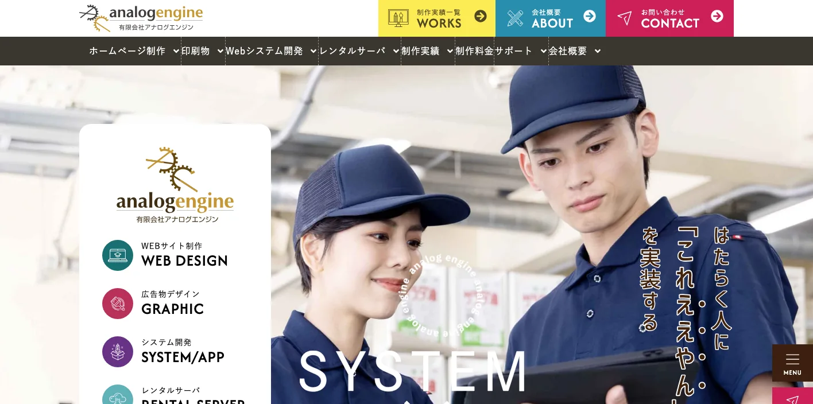
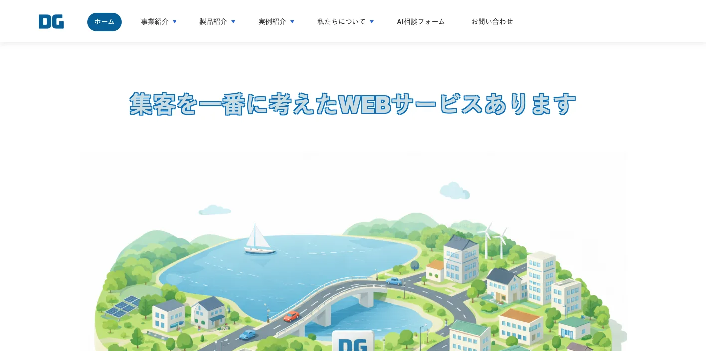
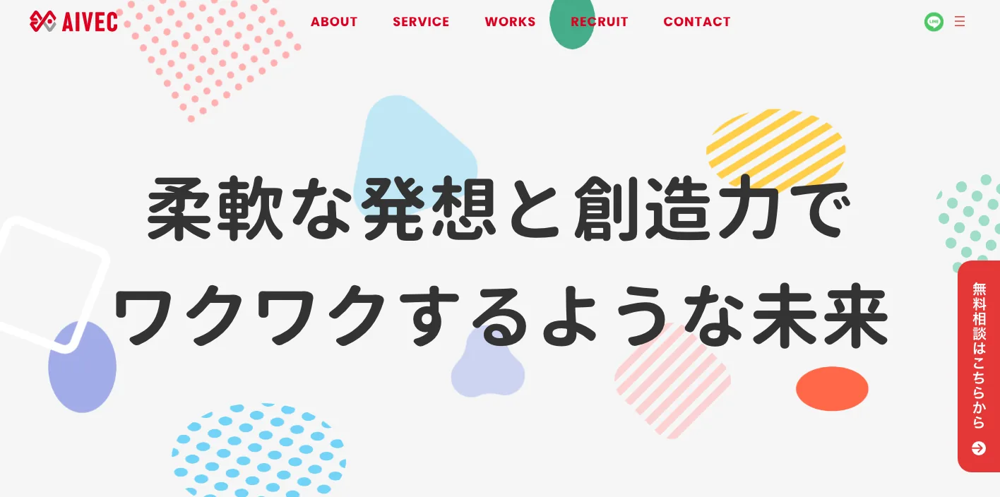
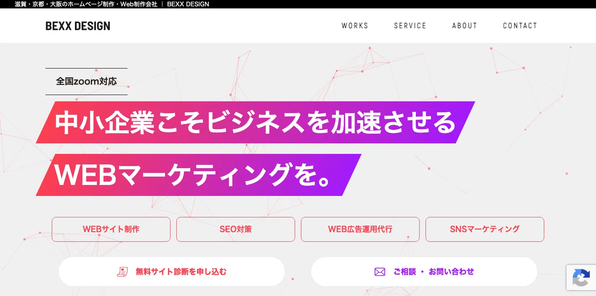
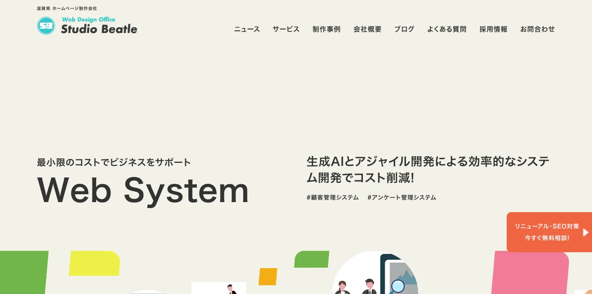
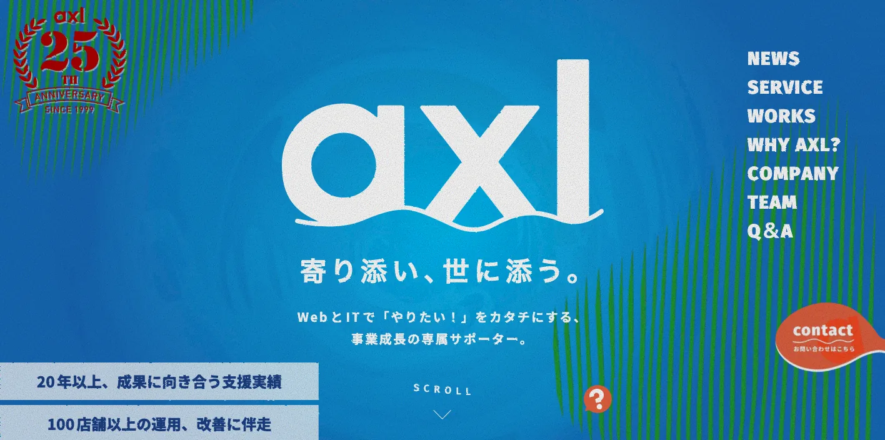

滋賀県でおすすめのLLMO会社10選｜費用相場と選び方もわかりやすく解説

滋賀県でLLMO会社を選ぶときは、「滋賀のホームページ制作会社」だけで探すと判断を誤りやすくなります。大津市・草津市・守山市・栗東市は京都・大阪への通勤圏や大学、医療、生活サービス、採用広報の文脈が強く、彦根市・長浜市・米原市は湖北・湖東の製造業、観光、歴史資産が重なります。甲賀市・湖南市・東近江市・竜王町では工場、物流、BtoB、求人の情報整理が重要です。
滋賀県の毎月人口推計調査では、令和8年4月1日現在の推計人口が1,392,634人、大津市343,769人、草津市149,657人、彦根市111,154人と公表されています。県の統計ページでは、県内総生産に占める製造業の割合が41.8％で全国1位、延観光入込客数は5,043万8,261人、琵琶湖は面積669.26平方キロメートルと示されています。滋賀県のLLMOは、工場向けの技術情報、観光の行程情報、採用広報、地域サービスの信頼性を分けて考える必要があります。
この記事では、滋賀県でLLMOに取り組むときに比較したい会社、選び方、費用相場をまとめます。基礎から確認したい方はLLMO対策の基礎記事、近隣県も比較したい方は三重県の比較記事、岐阜県の比較記事、大阪府の比較記事も参考にしてください。
目次

滋賀県でおすすめのLLMO会社10選
今回は、滋賀県内に拠点があり、ホームページ制作、SEO、Webマーケティング、採用広報、Webシステム、EC、SNS、広告運用、AI導入支援などの公開情報を確認しやすい会社を中心に選びました。県内でLLMO専業を前面に出す会社はまだ多くありません。そのため、AIに引用される情報設計、FAQ、構造化データ、採用・事例ページ、製造業や観光業の一次情報まで広げて支援できるかを見ています。
滋賀県では、京都・大阪寄りの生活商圏、湖東・湖北の製造業、琵琶湖周辺の観光、草津・守山・栗東の成長エリアで、AIに聞かれる質問が変わります。まずは下の表で、自社の地域と目的に近い会社を絞ってください。
| 会社名 | 拠点・対応 | 向いている相談 |
|---|---|---|
| 株式会社ナックウェブ | 彦根市 | 中小企業の魅力整理、採用・BtoBサイト、運用支援 |
| 株式会社いろあわせ | 彦根市・草津市 | 採用広報、地域メディア、企業の「働く理由」の発信 |
| アナログエンジン | 滋賀県内対応 | ホームページ制作、Webシステム、SEO、業種別実績 |
| 株式会社DGインデックス | 守山市 | AI導入、Web制作、システム開発、GA4・SEO・MEO |
| アイベック合同会社 | 草津市 | Web制作、Webマーケティング、Shopify、プラグイン開発 |
| BEXX DESIGN | 草津市 | SEO、広告、Webコンサル、写真・動画、LP制作 |
| Web Design Office スタジオビートル | 草津市・大津市 | Web制作、SEO、WordPress高速化、Webシステム |
| 株式会社アクセル | 草津市 | Web制作、EC運用、広告・SNS、写真動画、ITサポート |
| 株式会社LiKG | 全国対応 | LLMO診断、SEO連動、一次情報を使った記事制作 |
| 株式会社ジオコード | 全国対応 | AIO・LLMO、SEO、コンテンツ、サイト修正をまとめた支援 |
株式会社AIMAは滋賀本社の会社ではありませんが、全国対応でLLMO支援を提供しています。月額5万円のLLMO支援は初期費用なし・1ヶ月単位で始められ、質問設計、記事制作、引用チェックに絞って実務を進められます。大津市、草津市、守山市、栗東市、彦根市、長浜市、近江八幡市、東近江市、甲賀市、高島市のように商圏が分かれる場合も、まず無料LLMO診断で優先順位を確認できます。
株式会社ナックウェブ

株式会社ナックウェブは、彦根市に拠点を置くWeb制作会社です。公式サイトでは、滋賀の中小企業を対象に、企業の魅力を伝えるホームページ制作、制作プロセス、運用支援、お客様インタビュー、制作実績などを確認できます。彦根市佐和町に所在地があることも公開されています。
LLMOでは、AIに「この会社は何が強いのか」「誰に向いているのか」「実績はあるのか」を誤解なく答えさせる必要があります。ナックウェブは中小企業の魅力整理や採用にもつながる見せ方に強みがあるため、彦根・長浜・米原、湖東の製造業、建設、不動産、地域サービスで、事例や代表メッセージを整理したい会社に向いています。
株式会社いろあわせ

株式会社いろあわせは、彦根市芹橋に本社を置く会社です。公式サイトの会社概要では、2015年設立、しがジョブパークにもスタッフが常駐していることが確認できます。プロジェクトページでは、滋賀の求人メディアや企業向け採用パンフレット、Webサイト企画、動画企画制作などが紹介されています。
滋賀県では、製造業や地域企業の採用課題がLLMOと直結します。AI検索では「滋賀で働きやすい会社」「草津から通える製造業」「未経験でも応募できる会社」のような質問が増えます。いろあわせは、求人情報を単なる募集要項ではなく、働く理由、地域との関係、社員の声として整理したい会社に向いています。
アナログエンジン

アナログエンジンは、滋賀県でホームページ制作、Webシステム制作、各種印刷物制作、コンサルティングを行う制作プロダクションです。公式サイトでは、大津市、草津市、栗東市、守山市、野洲市、近江八幡市、東近江市、彦根市、長浜市、湖南市・甲賀市など地域別制作実績、医療福祉、製造業、観光、飲食、行政・団体など業種別実績を確認できます。
滋賀県のLLMOでは、地域名と業種名の掛け合わせが重要です。たとえば「守山市の司法書士」「栗東市の建設会社」「長浜市の観光施設」「甲賀市の製造業」のような質問に、AIが正しく答えられる情報構造が必要です。アナログエンジンは、地域別・業種別の実績を持つため、複数地域にまたがるサービスページを整えたい会社に向いています。
株式会社DGインデックス

株式会社DGインデックスは、守山市に拠点を置く会社です。会社情報では、AIを活用した商材開発、Webサイト制作・リニューアル、LINEミニアプリ開発、システム開発・運用支援、GA4・SEO・MEOなどのデジタルマーケティング支援、滋賀情報メディアサイトの運営などが確認できます。
LLMOは、記事制作だけではなく、問い合わせ導線、予約、LINE、MEO、アクセス解析までつながります。草津・守山・栗東エリアの店舗、サロン、地域サービス、求人サイト、予約型サービスでは、AIに答えられる情報と実際の申込導線をそろえることが大切です。DGインデックスは、AI導入やシステムも含めて相談したい会社に向いています。
アイベック合同会社

アイベック合同会社は、草津市のWeb制作会社です。公式サイトでは、ホームページ制作を軸に、Webマーケティング、システム・プラグイン開発、ShopifyサイトやWordPressサイトの制作実績などを確認できます。
滋賀県では、店舗や中小企業がEC、予約、問い合わせ、採用を一つのサイトにまとめたいケースがあります。LLMOでは、AIに「どの商品を買えるのか」「どこまで対応できるのか」「注文前に何を確認すべきか」を答えさせる必要があります。アイベックは、Web制作に加えて開発やEC要素を含めて整えたい会社に向いています。
BEXX DESIGN

BEXX DESIGNは、草津市に拠点を置くWeb制作・Webマーケティング事業者です。会社概要では、サイト企画・制作・運用、サービス企画、保守管理、Webコンサルティング、SEO対策、Web/SNS広告運用、写真・動画撮影、ライティングなどが確認できます。
大津・草津・守山・栗東の生活サービスや店舗では、AI検索、通常検索、広告、SNS、写真の印象がまとめて見られます。LLMOでは、ページの文章だけでなく、顧客の不安、料金、事例、写真、広告から流入した後の説明まで整えることが大切です。BEXX DESIGNは、LPや広告、SEO、写真動画を合わせて改善したい事業者に向いています。
Web Design Office スタジオビートル

Web Design Office スタジオビートルは、草津市と大津市に拠点を持つWeb制作会社です。会社概要では、Webサイト制作、コーポレートサイト、ECサイト、採用サイト、LP、Webシステム開発、SEO対策、WordPress高速化などの事業内容を確認できます。
滋賀県でAIに引用されやすいサイトにするには、表示速度、構造化データ、CMSの更新性、FAQ、内部リンク、事例ページなど、技術面の整備も必要です。スタジオビートルは、Web制作だけでなくWebシステムやWordPress高速化も扱うため、既存サイトの土台から改善したい会社に向いています。
株式会社アクセル

株式会社アクセルは、草津市下物町に拠点を置く会社です。公式サイトでは、Webサイト・ネットショップ制作、広告・SNS運用、SEO・MEO・AIO、写真・動画撮影、ITサポート、EC運用代行、CMS構築、保守管理などを確認できます。2003年設立、20年以上の支援実績も公開されています。
滋賀県の事業者では、楽天市場、Yahoo!ショッピング、Shopify、AmazonなどECと自社サイトを併用するケースもあります。AI検索では、商品ページだけでなく、公式サイトの会社情報、よくある質問、使い方、購入後サポートも見られます。アクセルは、EC運用、広告、SNS、撮影、ITサポートまで一体で整えたい会社に向いています。
株式会社LiKG

株式会社LiKGは、全国対応のLLMOコンサルティングを提供する会社です。公式サイトでは、LLMO診断、LLMO×SEOコンサルティング、EEAT強化記事制作、独自データ活用、2,000名超のプロネットワークなどを確認できます。料金も、LLMO診断プラン10万円から、LLMO×SEOコンサルティングプラン30万円から、EEAT強化記事制作5万円/1記事からと公開されています。
滋賀県内の制作会社にWeb運用や撮影を依頼しながら、AI検索での露出状況や記事設計だけを専門会社に見てもらいたい場合に候補になります。製造業、観光、採用広報、ECなどで、AIに引用される一次情報を増やしたい会社に向いています。
株式会社ジオコード

株式会社ジオコードは、SEO、コンテンツ、オウンドメディア、AIO・LLMOなどAI最適化を支援する会社です。公式サイトでは、通常プラン15万円から、スタンダードプラン月30万円から、コンテンツマーケプラン月20万円からなどの料金例、AIO・LLMO、構造化データ、一次情報の組み込み、AI生成回答の競合調査などの施策を確認できます。
滋賀県内の会社でも、京都・大阪・名古屋圏から問い合わせを取りたいBtoB、採用を全国に広げたい製造業、ECや観光予約を伸ばしたい事業では、県内商圏だけでは足りないことがあります。ジオコードは、SEO、サイト修正、記事制作、AI最適化をまとめて進めたい会社に向いています。
会社情報は各社公式サイトの公開情報を確認しています。滋賀県の人口は滋賀県「滋賀県の人口と世帯数:令和8年（2026年）」と令和8年4月月報、産業・観光・琵琶湖の統計は滋賀県「滋賀県なんでも一番」を参照しました。
滋賀県のLLMO会社を比較する際のポイント
滋賀県のLLMO会社選びでは、琵琶湖を囲む県内全域を同じ商圏として見ないことが大切です。大津・草津の生活商圏、湖東・湖北の製造業、甲賀・湖南の工業エリア、湖西・近江八幡の観光、採用広報では、AIに答えさせるべき質問が違います。
大津・草津・守山・栗東は、生活商圏と京都・大阪流入を分ける
大津市は県内最大の人口を持ち、京都方面とのつながりも強い地域です。草津市、守山市、栗東市は人口や事業所の動きが活発で、医療、教育、住宅、士業、店舗、採用、BtoBサービスが混ざります。LLMOでは「滋賀県内の会社」だけでなく、「京都から近い」「草津駅周辺」「大津で相談できる」といった検索文脈も見ます。
この地域で会社を選ぶなら、地域名の羅列ではなく、誰がどこから来るのかを整理できるかを確認してください。料金、対応エリア、アクセス、駐車場、オンライン対応、相談の流れ、口コミや事例を一貫して整える会社が向いています。
彦根・長浜・米原は、製造業と歴史観光を分けて説明する
湖東・湖北では、製造業、物流、建設、観光、歴史資産が同じ地域にあります。彦根城、長浜、米原の交通結節点などは観光の文脈で語られますが、法人向けには部品加工、設備、配送、採用、拠点間連携が重要です。
この地域のLLMOでは、観光ページとBtoBページを混ぜないことが大切です。製造業なら設備、対応工程、納期、品質管理、取引先業界を明確にし、観光業なら行き方、所要時間、雨の日、周辺施設、予約条件を整えます。AIに違う文脈を混ぜさせない設計が必要です。
甲賀・湖南・東近江・竜王は、工業・物流・採用の一次情報を見る
滋賀県は県内総生産に占める製造業の割合が高く、内陸工業県としての色が強い県です。甲賀、湖南、東近江、竜王では、工場、物流、部材、研究開発、採用、環境対応など、AIに読み取らせるべき情報が多くなります。
この地域で比較するなら、制作会社がきれいなデザインだけでなく、技術情報を整理できるかを見てください。製品ページ、設備紹介、導入事例、品質管理、認証、採用ページ、よくある質問を横断して直せる会社のほうが、LLMOには向いています。
琵琶湖・湖西・近江八幡は、観光客の具体的な質問に答えられるかを見る
滋賀県の観光は、琵琶湖、近江八幡、長浜、比叡山、湖西、キャンプ、サイクリング、歴史文化、寺社、自然体験など、目的が細かく分かれます。AI検索では「子連れで行けるか」「車なしで回れるか」「雨の日はどうするか」「京都旅行と一緒に行けるか」のような具体的な質問が増えます。
観光業でLLMO会社を選ぶなら、写真、アクセス、モデルコース、季節情報、FAQ、予約前の注意点、周辺施設との関係を整えられるかを確認してください。琵琶湖周辺では、地図・移動・天候・駐車場の情報が古いと、AI回答の信頼性が下がります。
採用広報は、仕事内容より「滋賀で働く理由」を出せるかを見る
滋賀県では、京都・大阪へ通勤できる地域も多く、求職者は県内企業だけを比較しているとは限りません。製造業、物流、医療福祉、地域サービスでは、給与や職種だけでなく、通勤、働き方、教育体制、地域との関係、生活しやすさが選ばれる理由になります。
LLMOでは、AIが求人情報を要約するときに、募集要項だけでなく、社員インタビュー、働く環境、キャリア、地域性を参照します。採用に困っている会社は、採用広報に強い会社や、社員の声を取材できる会社を選ぶとよいです。
県内会社と全国対応会社は、役割を分けて使う
滋賀県内の会社は、現地取材、写真撮影、地域事情、企業との距離の近さに強みがあります。一方で、LLMO診断、AI検索の露出調査、構造化データ、競合比較、記事制作の運用設計は、全国対応会社のほうが経験を持っている場合があります。
現実的には、県内会社に制作・撮影・運用を任せ、LLMOの診断や記事設計だけを専門会社に依頼する形もあります。滋賀県では、地域を知る会社とAI検索を知る会社を分けて考えると、費用も進め方も整理しやすくなります。
滋賀県のLLMO会社に依頼する費用相場
LLMOの費用は、記事の本数だけで決まりません。滋賀県では、製造業の技術情報、観光のモデルコース、採用広報、EC、Googleマップ、SNS、写真・動画、システム改修まで関わることがあります。ここでは、依頼内容ごとに費用感を整理します。
診断だけなら、まずは質問の棚卸しが中心
最初の診断は、無料から10万円前後までが目安です。やることは、AIに聞かれそうな質問を洗い出し、自社サイトが答えられているかを確認することです。大津の士業なら「相談の流れ」「料金」「対応地域」、草津の店舗なら「予約」「駐車場」「口コミ」、甲賀の製造業なら「対応工程」「品質管理」「納期」を見ます。
AIMAの無料LLMO診断のように、最初に弱いページや優先順位を確認してから依頼範囲を決める方法もあります。いきなり大型のサイト改修をするより、まずはAIに答えられていない質問を見つけるほうが安全です。
月額5万〜15万円は、既存サイトを育てる段階
月額5万〜15万円ほどでは、既存ページの修正、FAQ追加、記事制作、内部リンク、構造化データの簡易対応、引用チェックなどが中心になります。小規模店舗、士業、地域サービス、観光施設、採用ページの改善なら、この価格帯から始めやすいです。
滋賀県では、地域名を細かく分けるだけでもAIが理解しやすくなることがあります。たとえば「滋賀県対応」だけでなく、「大津・草津・守山」「彦根・長浜・米原」「甲賀・湖南・東近江」「湖西・高島」といった単位でサービス説明を整える方法です。ただし、地名だけ変えた同じ文章の量産は低品質になりやすいため避けましょう。
月額15万〜30万円は、競合調査と構造改善まで含める段階
月額15万〜30万円では、AI検索で競合がどう引用されているか、どのページが不足しているか、既存記事をどう直すか、サイト構造をどう変えるかまで見ます。LiKGやジオコードのように、LLMO診断やAI最適化を明示している会社の料金も、このあたりから上の価格帯が中心になります。
製造業、観光、採用、ECでは、記事だけでなく、事例、料金、よくある質問、導入までの流れ、代表者や専門家情報も必要です。AIに選ばれるには、ページ単体ではなくサイト全体の説明力を上げる必要があります。
制作・撮影・EC・システムを含めると、総額は大きく変わる
ホームページの新規制作、リニューアル、写真撮影、動画、EC、予約システム、採用サイト、業務システム連携まで含めると、総額は数十万円から数百万円まで広がります。これはLLMO費用というより、事業の情報基盤を作る費用です。
滋賀県では、観光業なら写真と移動情報、製造業なら設備・工程・品質のページ、採用なら社員インタビュー、ECなら商品説明と購入前FAQが重要になります。既存サイトが古い場合は、LLMO記事だけを追加しても限界があります。先にサイト構造と素材を整えたほうが、結果的に安く済むこともあります。
製造・観光・採用は、一次情報づくりの費用を見込む
滋賀県で特に費用を見込むべきなのは、一次情報づくりです。製造業なら設備や工程、観光ならモデルコースや季節情報、採用なら社員の声、地域サービスなら料金と相談事例が必要です。AIは、公式サイトにしかない情報を引用しやすく、他サイトにもある一般論だけでは選ばれにくくなります。
安く始めるなら、毎月1つのテーマだけを深く整える方法が現実的です。1ヶ月目はFAQ、2ヶ月目は事例、3ヶ月目は料金と相談の流れ、4ヶ月目は地域別ページというように進めると、重複を避けながらサイトを育てられます。
滋賀県のLLMO会社に関するよくある質問
滋賀県のLLMO会社に依頼する意味はありますか？
あります。滋賀県は、大津・草津の生活商圏、湖東・湖北の製造業、琵琶湖周辺の観光、甲賀・湖南の工業エリア、採用広報で検索意図が大きく違います。全国向けの一般記事だけでは、AIが地域ごとの違いを理解しにくくなります。
滋賀県内の会社でないとLLMOは任せられませんか？
県内会社でなくても依頼できます。ただし、現地取材、写真撮影、地域商圏の把握、採用広報は県内会社が進めやすい場合があります。AI検索の診断、構造化データ、競合調査、記事設計は全国対応会社でも進められます。地域理解が必要な作業と、専門性が必要な作業を分けて考えるのがおすすめです。
大津市と草津市では、対策内容は変わりますか？
変わります。大津市は県庁所在地で、京都寄りの生活・医療・士業・観光の文脈が強く、草津市は駅周辺の商業、大学、採用、若い世帯、店舗、BtoBサービスの文脈が出やすい地域です。同じLLMOでも、優先するページやFAQが変わります。
滋賀県の製造業でもLLMOは使えますか？
使えます。滋賀県は製造業の割合が高い県なので、LLMOと相性がよい分野です。AIは、加工内容、対応素材、設備、品質管理、納期、ロット、過去事例、対応エリアを整理して回答します。技術情報がPDFや古いページに埋もれている場合は、Webページとして整理するだけでも相談前の理解が進みます。
琵琶湖周辺の観光業でもLLMOは必要ですか？
必要です。観光客はAIに「車なしで回れるか」「雨の日でも楽しめるか」「子連れ向けか」「京都旅行と一緒に行けるか」「駐車場はあるか」などを具体的に聞きます。公式サイトに情報が整理されていないと、AIは旅行サイトや口コミサイトを参照しやすくなります。
採用目的でもLLMOは役立ちますか？
役立ちます。求職者は「滋賀で働きやすい会社」「未経験で応募できる製造業」「草津から通える会社」のように質問します。募集要項だけでなく、働く環境、教育体制、社員の声、地域で働く理由を出しておくと、AIに要約されやすくなります。
滋賀県のLLMO費用はどれくらい見ておけばよいですか？
小さく始めるなら無料診断から月額5万〜15万円、本格的に競合調査やサイト構造改善まで行うなら月額15万〜30万円以上を見ておくと現実的です。制作、撮影、EC、採用サイト、予約システム、業務システム連携を含む場合は別予算になります。
成果が出るまでの期間はどれくらいですか？
既存サイトの状態によりますが、FAQ追加やサービスページ修正のような軽い改善は1〜3ヶ月で変化を確認しやすくなります。製造業の事例ページ、観光のモデルコース、採用広報、構造化データまで整える場合は、半年以上かけて育てる前提が安全です。
滋賀県でLLMO会社を選ぶなら、琵琶湖を囲む商圏を一つにまとめないことが重要です
滋賀県のLLMO会社選びで一番大事なのは、県全体を一つの市場として見ないことです。大津・草津・守山・栗東は生活商圏と京都・大阪流入、彦根・長浜・米原は製造業と歴史観光、甲賀・湖南・東近江は工業・物流、湖西・近江八幡は観光、採用広報では働く理由が重要になります。
最初にやるべきことは、会社探しではなく質問の整理です。「誰が、どの地域から、何を比較して、どんな不安を持って問い合わせるのか」を決めると、必要な会社のタイプが見えてきます。県内会社に制作や取材を任せるのか、全国対応会社にLLMO診断を任せるのか、AIMAのような月額支援で小さく始めるのかも判断しやすくなります。
滋賀県でLLMOを始めるなら、まずは重要地域を1つ選び、その地域のFAQ、サービスページ、事例ページから整えるのがおすすめです。広げるのはその後で十分です。滋賀県では、地域ごとの質問に答えられる会社を選ぶことが、AI検索で見つけられる近道です。